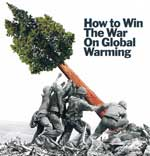
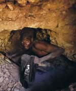
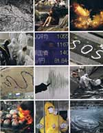

Writing tools for you
There is no one correct way of writing stories about humanitarian issues, but you can get your story on track by asking the right questions.
Next, look to reliable sources of information to support your story. And then find the angle that will hook your readers and keep them engaged.
In the end, a good humanitarian story will help readers (and yourself) get a better understanding of the issues involved whether it involves a disaster or a long-running crisis.
 Asking focused questions
When disaster strikes whether natural or man-made, the first question that comes to mind is why did it happen?
The question becomes more pressing when it results in loss of lives, displacement of people and destruction of homes and structures.
 Finding your angle
Giving your story a good angle draws in your audience.
More importantly, it can also put a much-needed spotlight on long-drawn issues or a crisis slowly unfolding — such as the impact of conflicts, poverty or health risks — which mainstream media could not cover either due to lack of journalists specialising on humanitarian stories or that chronic issues tend to lose in the fight for editorial priority as the headlines keep changing.
 Wrapping up & extras
Humanitarian issues are as far-reaching as the extent that technological advancement could take us in the world of communications.
Anyone who writes about disasters and crisis cannot be confined to a set number of coverage guidelines.
But as the global public relies more on citizen journalists for information, their responsibility to provide readers with accurate and informative stories is crucial and unavoidable.
Back to top